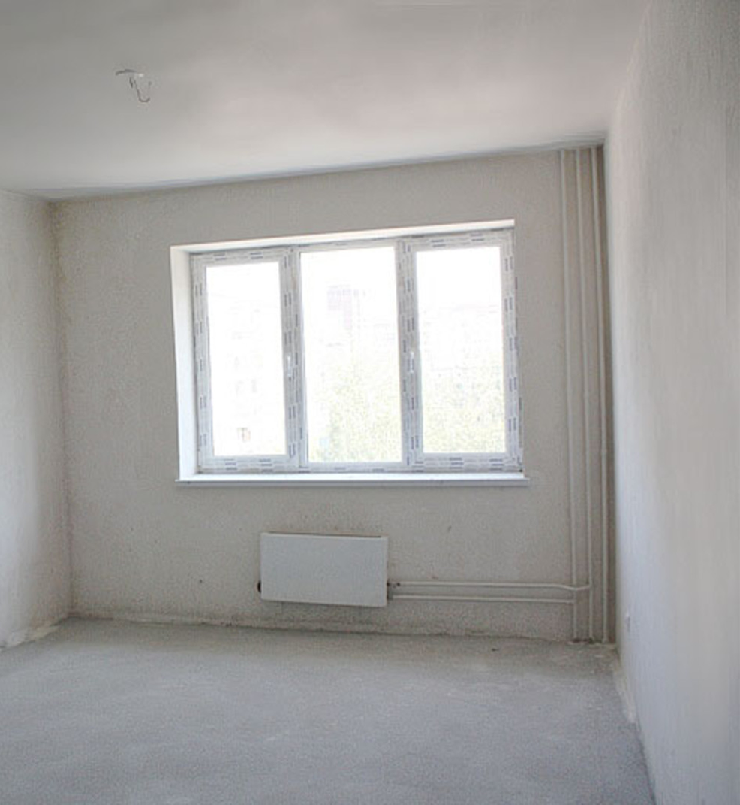
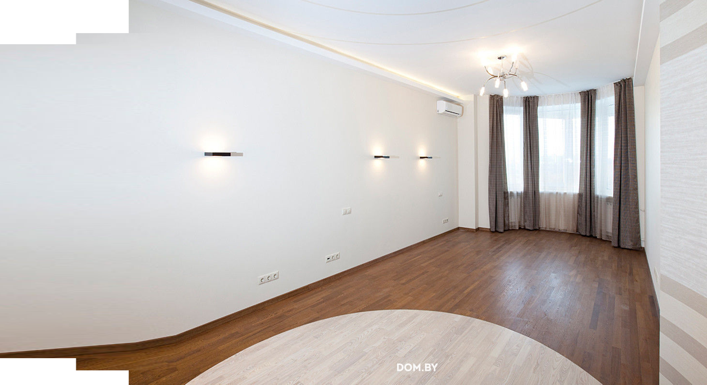

 <!-- Before after section -->
 <section class="before glide__before" id="defore-section">
    <div class="glide glide-portfolio">
        <div class="glide__track" data-glide-el="track">
            <ul class="glide__slides glide-portfolio__slides">
                <li class="glide__slide glide-portfolio__slide">
                    <div class="before__box box">
                        
                        
                    </div>
                </li>
            </ul>
        </div>
        <div class="glide__arrows client" data-glide-el="controls">
            <button class="glide__arrow glide__arrow--left client" data-glide-dir="<">
                <i class="fas fa-chevron-left"></i>
            </button>
            <button class="glide__arrow glide__arrow--right client" data-glide-dir=">">
                <i class="fas fa-chevron-right"></i>
            </button>
        </div>
    </div>
</section>